Навигация с визуальной повторной локализацией с ограничением по положению
1. Содержание урока
Реализация навигации с визуальной повторной локализацией (relocalization) с использованием ArUco-меток в сочетании с ограничением по положению (pose constraint).
За счёт размещения ArUco-меток в качестве пространственных якорей, когда локализация робота теряется или накопленная ошибка становится слишком большой, визуальное обнаружение автоматически запускает повторную локализацию для коррекции глобального положения робота на карте, повышая устойчивость и надёжность системы навигации.
Цели обучения
- Освоить подготовку, размещение и методы записи положения ArUco-меток.
- Понять принцип работы и область применения визуальной повторной локализации.
- Научиться использовать режим навигации с ограничением по положению в сочетании с визуальной повторной локализацией.
2. Предварительные условия
Используйте следующую команду, чтобы запустить агента microROS и подключиться к шасси:
sh start_agent.sh
Запустите базовые узлы — камеру, вспомогательный узел манипулятора, слияние данных лидара и т.д.:
ros2 launch m3pro_bringup car_base.launch.py

3. Построение карты занятости и карты положений
Запустите узел SLAM-картографирования:
ros2 launch slam_mapping slam_toolbox.launch.py
Управляйте роботом с клавиатуры или геймпада для завершения построения карты.
Сохраните карту занятости (grid map):
ros2 launch slam_mapping save_slamtoolbox_map.launch.py
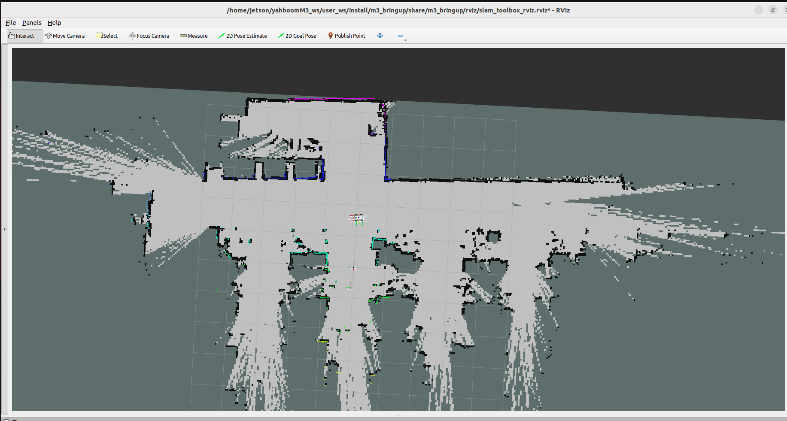
Примечание: карта будет сохранена в директории $HOME/map.


Проверка точек положения (pose points)
Нажмите на опцию MarkerArray на панели Display в Rviz, чтобы посмотреть точки положения карты положений (pose map). Убедитесь, что в области карты точек положения достаточно и они равномерно распределены — это необходимо для локализации при последующей навигации.

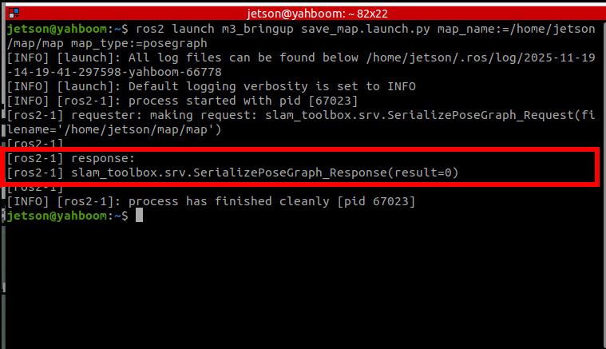
Сохраните карту положений:
ros2 launch slam_mapping save_slamtoolbox_map.launch.py map_type:=posegraph
После сохранения и карты занятости, и карты положений нажмите Ctrl+C в терминале узла построения карты, чтобы остановить построение карты.
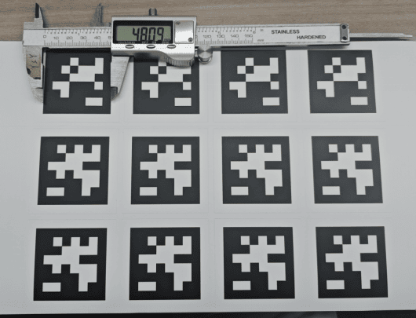
4. Запись координат ArUco-меток на карте
4.1 Подготовка ArUco-меток
Их можно получить следующими способами:
- метки из комплекта карты песочного стола (sand table map package);
- скачать и распечатать метки из приложенных материалов.
Определение размера метки
Измерьте фактическую длину стороны метки с помощью измерительного инструмента. Длина стороны меток из комплекта карты песочного стола составляет 0.048 м.
Изменение файла конфигурации обнаружения ArUco
$HOME/M3Pro_ws/src/m3pro_bringup/config/common.yaml
Измените размер на фактически измеренное значение. Если вы используете метки из комплекта карты песочного стола, заводское значение по умолчанию — 0.048, и изменять его не нужно.
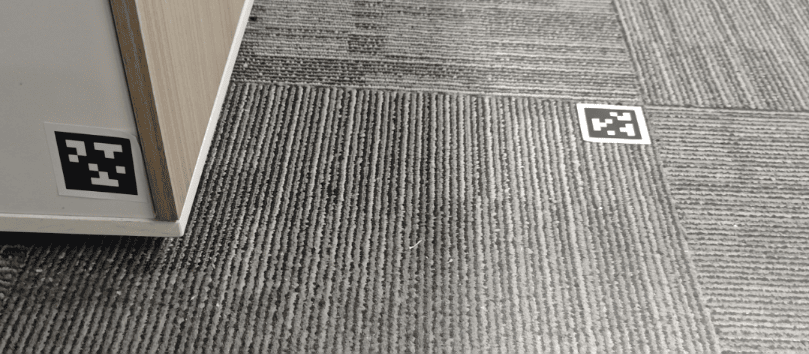
...
apriltag: # имя узла
ros__parameters:
image_transport: raw # формат изображения: "raw" или "compressed"
family: 36h11 # семейство меток: 16h5, 25h9, 36h11
size: 0.048 # размер стороны метки по умолчанию, в метрах
...
4.2 Размещение ArUco-меток
Разместите ArUco-метки в нужных местах на карте. Их можно размещать в любом месте, видимом камере — на полу, стене или в любом другом месте.
Важно. Советы по размещению
- Рекомендуется размещать метки рядом с начальными или конечными точками часто используемых маршрутов навигации, чтобы запускать повторную локализацию перед отправлением робота или после достижения цели.
- Не рекомендуется размещать метки в местах, где робот движется, поскольку во время движения манипулятор может вызывать механическую вибрацию, что приводит к частому дрожанию кадра камеры и неточному расчёту положения робота.
4.3 Запуск узла записи меток
ros2 launch m3pro_bringup record_tag.launch.py
С помощью клавиатуры или геймпада подведите робота к метке, которую нужно записать, чтобы метка попала в поле зрения камеры.
В поле ArUco ID панели aritag_recorder_panel введите ID метки, которую нужно записать, затем нажмите Save (перед записью убедитесь, что локализация робота точна).
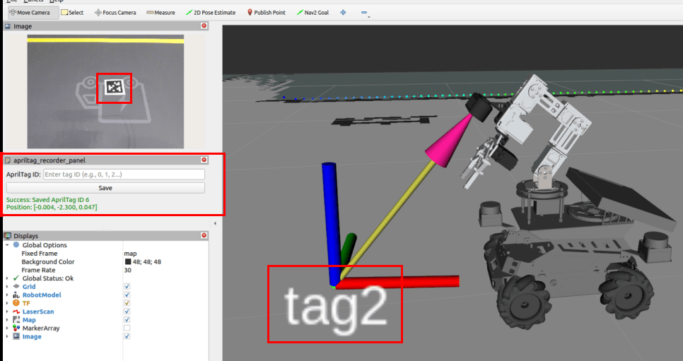
Перед записью положения метки, если вы заметили, что контур лидара значительно отклоняется от особенностей краёв окружающего пространства, как показано на рисунке ниже, это означает ошибку локализации. В этом случае перед записью положения необходимо сначала выполнить ручную повторную локализацию с помощью инструмента 2D Estimate.
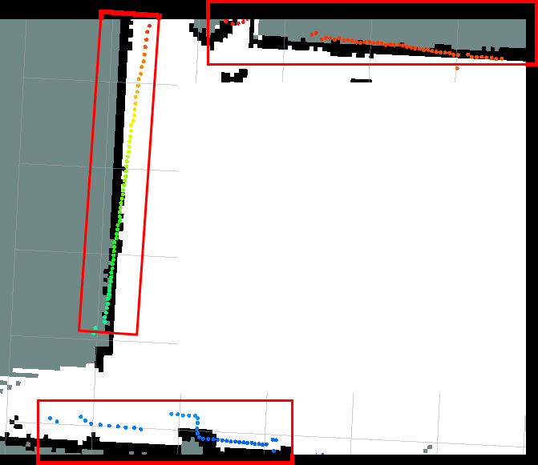
На рисунке ниже показана точная локализация — высокое совпадение контура лидара с особенностями краёв окружающего пространства.
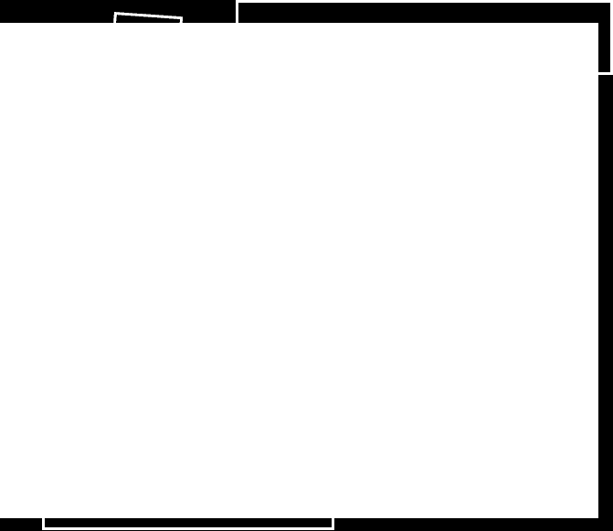
Повторите указанные выше шаги, чтобы завершить запись положений всех меток. Путь к файлу записи:
$HOME/M3Pro_ws/src/m3pro_bringup/config/aritag_relocation.yaml
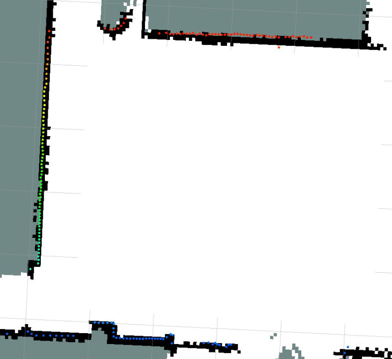
После записи положений меток нажмите Ctrl+C, чтобы закрыть узел записи.
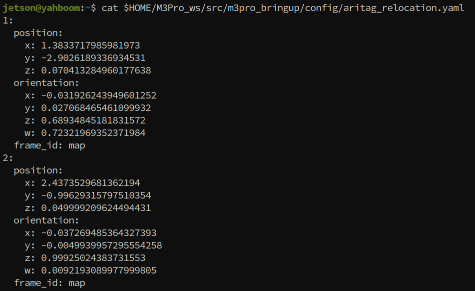
5. Запуск режима навигации с визуальной повторной локализацией
ros2 launch M3Pro_navigation toolbox_location_nav.launch.py relocation:=True detection_enabled:=True
После запуска интерфейс совпадает с обычной навигацией.
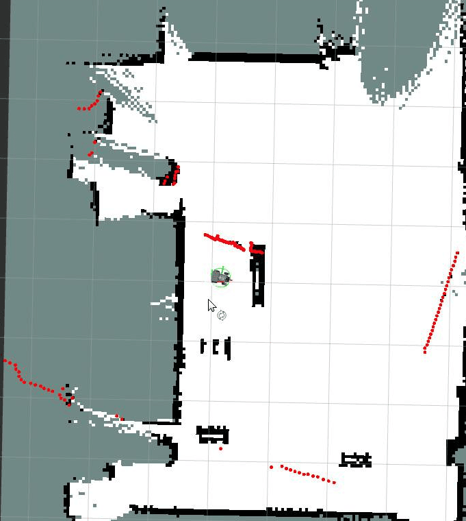
5.1 Проверка функции повторной локализации
Можно вручную сдвинуть положение робота (моделируя серьёзную ошибку одометрии или потерю локализации, как показано на рисунке выше).
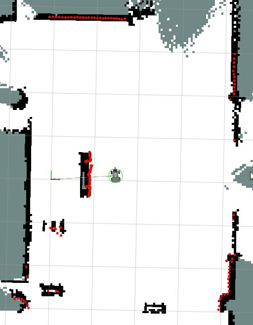
Когда метка с карты попадает в поле зрения камеры, автоматически запускается повторная локализация, корректирующая глобальную локализацию робота на карте.
5.2 Управление обнаружением меток через сервис
Поскольку узел обнаружения aritag с высокой частотой занимает процессор, можно отключать состояние обнаружения, когда оно не требуется. Узел предоставляет сервис control_detection для управления тем, выполняется ли обнаружение меток.
Запрос состояния
ros2 service call /control_detection apriltag_localization/srv/ControlDetection "{command: 0}"
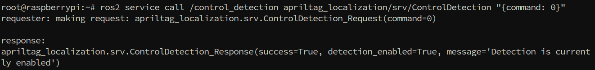
Включение обнаружения
ros2 service call /control_detection apriltag_localization/srv/ControlDetection "{command: 1}"
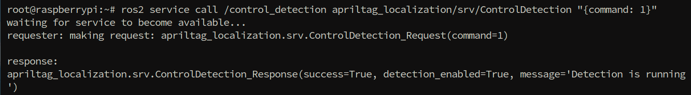
Отключение обнаружения (снижает загрузку процессора)
ros2 service call /control_detection apriltag_localization/srv/ControlDetection "{command: 2}"
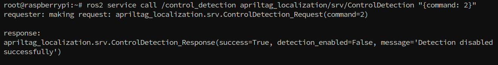
6. Анализ исходного кода
6.1 Launch-файл узла записи меток
$HOME/M3Pro_ws/src/m3pro_bringup/launch/record_tag.launch.py
import os
from ament_index_python.packages import get_package_share_directory
from launch import LaunchDescription
from launch.substitutions import LaunchConfiguration
from launch_ros.actions import Node
from launch.actions import DeclareLaunchArgument,IncludeLaunchDescription, TimerAction, ExecuteProcess
from launch.launch_description_sources import PythonLaunchDescriptionSource
def generate_launch_description():
# Шаг 1: объявляем параметр пути к выходному файлу
output_file_path_arg = DeclareLaunchArgument(
'output_file_path',
default_value=os.path.join(get_package_share_directory("m3pro_bringup"),"config","aritag_relocation.yaml"),
description='Path to the output YAML file for saving AprilTag poses'
)
# Шаг 2: объявляем параметр целевой системы координат
target_frame_arg = DeclareLaunchArgument(
'target_frame',
default_value='map',
description='Target coordinate frame for recording AprilTag poses'
)
# Шаг 3: создаём узел записи ArUco
apriltag_recorder_node = Node(
package='apriltag_localization',
executable='apriltag_recorder',
name='apriltag_recorder',
output='screen',
parameters=[{
'output_file_path': LaunchConfiguration('output_file_path'),
'target_frame': LaunchConfiguration('target_frame'),
}]
)
# Шаг 4: запускаем навигацию и slam toolbox
navigation_launch = IncludeLaunchDescription(
PythonLaunchDescriptionSource([os.path.join(
get_package_share_directory('M3Pro_navigation'),
'launch',
'toolbox_location_nav.launch.py'
)]),
launch_arguments={
"rviz_config": os.path.join(
get_package_share_directory('m3pro_bringup'),
'rviz',
'aritag_record.rviz'
),
"log_level": "info",
}.items()
)
# Шаг 5: включаем сервис обнаружения ArUco с задержкой 8 секунд
call_detection_service = TimerAction(
period=8.0,
actions=[
ExecuteProcess(
cmd=['ros2', 'service', 'call', '/control_detection',
'apriltag_localization/srv/ControlDetection',
'{command: 1}'],
output='screen'
)
]
)
return LaunchDescription([
output_file_path_arg,
target_frame_arg,
apriltag_recorder_node,
navigation_launch,
call_detection_service
])
Пояснение к коду:
- Объявление параметров:
output_file_path: указывает путь к YAML-файлу для сохранения положений ArUco-меток, по умолчанию —aritag_relocation.yaml.-
target_frame: целевая система координат, по умолчанию —map(система координат карты). -
Узел apriltag_recorder:
- Функция: отслеживает ArUco-метки в поле зрения камеры и сохраняет их положения в системе координат карты в YAML-файл.
- Вход: топик изображения камеры, преобразования координат tf.
-
Выход: файл конфигурации
aritag_relocation.yaml. -
navigation_launch:
- Запускает систему навигации slam toolbox для получения точного положения робота.
-
Загружает выделенный файл конфигурации RViz
aritag_record.rviz, включающий панельaritag_recorder_panel. -
call_detection_service:
- Использует
TimerAction, чтобы вызвать сервис/control_detectionс задержкой 8 секунд. - Включает обнаружение ArUco (
command: 1означает включение). - Задержка нужна, чтобы дождаться полного запуска системы перед включением обнаружения, избегая конфликтов ресурсов.
6.2 Launch-файл навигации в режиме повторной локализации
$HOME/M3Pro_ws/src/M3Pro_navigation/launch/toolbox_location_nav.launch.py
Этот launch-файл является основной точкой входа для навигации с визуальной повторной локализацией, координирующей запуск шасси, локализации, навигации и других модулей. Ниже приведено подробное объяснение:
def generate_launch_description():
#Определение папки с картами и файлов
map_folder_dir = os.path.join(os.path.expanduser('~'), 'map')
# Declare arguments
declared_arguments = []
m3pronav_dir=os.path.join(get_package_share_directory('M3Pro_navigation'))
#Файл карты
declared_arguments.append(
DeclareLaunchArgument(
"map",
default_value="map.yaml",
description="map name",
)
)
declared_arguments.append(
DeclareLaunchArgument(
"gui",
default_value='True',
description="if rviz is used, set to True. If False, rviz will not be launched.",
)
)
#Файл карты положений slam_toolbox
declared_arguments.append(
DeclareLaunchArgument(
"pose_map",
default_value="map",
description="",
)
)
declared_arguments.append(
DeclareLaunchArgument(
'relocation',
default_value='false'
)
)
declared_arguments.append(
DeclareLaunchArgument(
'detection_enabled',
default_value='false'
)
)
#Файл параметров навигации
declared_arguments.append(
DeclareLaunchArgument(
"params_file",
default_value= os.path.join(get_package_share_directory("M3Pro_navigation"),
"param", "yahboom_M3Pro.yaml"),
description="Full path to param file to load",
)
)
declared_arguments.append(
DeclareLaunchArgument(
"use_sim_time",
default_value="False",
description="Use simulation (Gazebo) clock if true",
)
)
declared_arguments.append(
DeclareLaunchArgument(
"rviz_config",
default_value=os.path.join(m3pronav_dir,'rviz','nav2.rviz')
)
)
declared_arguments.append(
DeclareLaunchArgument(
"log_level",
default_value="info",
description="log level"
)
)
# Initialize Arguments
map = LaunchConfiguration("map")
map_dir=PathJoinSubstitution([map_folder_dir, map])
pose_map=PathJoinSubstitution([map_folder_dir, LaunchConfiguration("pose_map")])
params_file=LaunchConfiguration("params_file")
use_sim_time=LaunchConfiguration("use_sim_time",default="false")
rviz_config=LaunchConfiguration("rviz_config")
log_level=LaunchConfiguration("log_level")
carbase_launch=IncludeLaunchDescription(
PythonLaunchDescriptionSource(os.path.join(get_package_share_directory('m3pro_bringup'),'launch','car_base.launch.py')),
launch_arguments={'log_level': log_level,
'relocation': LaunchConfiguration('relocation'),
'detection_enabled': LaunchConfiguration('detection_enabled'),
}.items())
#Изменённый launch-файл navigation2, блокирующий функцию локализации AMCL
nav2_launch_mod = os.path.join(m3pronav_dir,
'launch',
'bringup_mod.launch.py'
)
# Файл запуска алгоритма локализации slamtoolbox
slamtoolbox_localization_launch_file=os.path.join(get_package_share_directory('slam_mapping'),'launch','localization_launch.py')
#Навигация с локализацией slamtoolbox
slamtoolbox_localization_nav = GroupAction(
actions=[
# Запуск файла навигации navigation2 (без глобальной локализации)
IncludeLaunchDescription(
PythonLaunchDescriptionSource(nav2_launch_mod),
launch_arguments={
"map": map_dir,
"params_file": params_file,
"use_sim_time":use_sim_time,
"log_level": log_level,
}.items()),
#Запуск узла локализации slamtoolbox
IncludeLaunchDescription(
PythonLaunchDescriptionSource(slamtoolbox_localization_launch_file),
launch_arguments={
"pose_map": pose_map,
"use_sim_time":use_sim_time,
}.items(),
),
#Вывод в лог
LogInfo(msg=['====================Robot-M3Pro Navigation Start with SlamToolbox localization===================='])
]
)
#Узел rviz
rviz_node = Node(
package = 'rviz2',
executable = 'rviz2',
name='rviz2',
arguments=['-d', rviz_config],
parameters=[{'use_sim_time': use_sim_time}],
output='screen',
condition=IfCondition(LaunchConfiguration('gui'))
)
return LaunchDescription(
[
*declared_arguments, #Объявленные аргументы
rviz_node, #узел rviz
carbase_launch,
slamtoolbox_localization_nav #навигация с локализацией slamtoolbox
]
)
Пояснение к коду:
- carbase_launch:
- Запускает базовые узлы шасси, включая камеру, вспомогательный узел манипулятора, слияние данных лидара и т.д.
-
Передаёт параметры
relocationиdetection_enabledдля управления тем, включена ли визуальная повторная локализация. -
nav2_launch_mod:
- Использует изменённый launch-файл Nav2 (
bringup_mod.launch.py). -
Эта версия блокирует функцию локализации AMCL, поскольку система использует для локализации SlamToolbox.
-
slamtoolbox_localization_nav:
-
Это
GroupAction, содержащий несколько взаимодействующих компонентов:- запускает изменённый стек навигации Nav2 (планирование пути, карта стоимости, контроллер и т.д.);
- запускает узел локализации SlamToolbox и загружает карту положений для реализации локализации с ограничением по положению;
- печатает информацию о запуске в лог.
-
rviz_node:
- Запускает инструмент визуализации RViz2.
- Использует
IfCondition, чтобы запускаться только приgui=True. - Загружает указанный файл конфигурации RViz, содержащий панели отображения, связанные с навигацией.
6.3 Структура файла aritag_relocation.yaml
Структура сформированного после записи файла aritag_relocation.yaml приведена ниже:
tags:
- id: 0 # ID ArUco-метки
position: # координаты положения (относительно системы координат карты)
x: 1.234 # координата X (метры)
y: 0.567 # координата Y (метры)
z: 0.0 # координата Z (метры, обычно 0 для высоты пола)
orientation: # ориентация (кватернион)
x: 0.0
y: 0.0
z: 0.123
w: 0.987
- id: 1
position:
x: 2.345
y: 1.234
z: 0.0
orientation:
x: 0.0
y: 0.0
z: 0.456
w: 0.890
Описание полей:
| Поле | Тип | Описание |
|---|---|---|
id |
int | Уникальный идентификатор ArUco-метки |
position.x |
float | Координата X метки в координатах карты (метры) |
position.y |
float | Координата Y метки в координатах карты (метры) |
position.z |
float | Координата Z метки в координатах карты (метры) |
orientation.x/y/z/w |
float | Кватернион ориентации метки, представляющий её направление |
6.4 Принцип работы визуальной повторной локализации
- Обнаружение ArUco-меток: камера непрерывно обнаруживает ArUco-метки в поле зрения.
- Сопоставление с глобальными координатами: если метка обнаружена, её глобальные координаты считываются из
aritag_relocation.yaml. - Вычисление отклонения: текущее оценённое по одометрии положение сравнивается с фактическим положением, предоставленным ArUco.
- Коррекция положения: положение ArUco используется для коррекции глобального положения робота.
Преимущества повторной локализации:
- ✅ Устраняет накопленную ошибку: одометрия накапливает ошибку со временем, а ArUco предоставляет абсолютную опорную точку положения.
- ✅ Решает проблему вырожденных сценариев: в длинных коридорах или областях с похожими особенностями лазерный SLAM может терять локализацию, а ArUco предоставляет надёжные якоря.
Меры предосторожности:
- ⚠️ Перед записью положений меток убедитесь, что лазерная локализация точна (контур лидара совпадает с краями окружающего пространства).
- ⚠️ Если положения меток изменились, необходимо заново записать их глобальные координаты.
6.5 Параметры конфигурации меток
Путь к файлу параметров конфигурации узла меток:
$HOME/M3Pro_ws/src/m3pro_bringup/config/common.yaml
Описание параметров:
| Параметр | Описание | Значение по умолчанию |
|---|---|---|
image_transport |
Формат передачи изображения: raw — необработанное изображение, compressed — сжатое изображение |
raw |
family |
Тип семейства ArUco-меток; разные семейства используют разные методы кодирования | 36h11 |
size |
Физическая длина стороны метки (в метрах), должна соответствовать фактическому размеру | 0.048 |
profile |
Выводить ли информацию для анализа производительности | false |
max_hamming |
Максимально допустимое расстояние Хэмминга (число исправляемых бит ошибки), 0 означает без коррекции | 0 |
detector.threads |
Число потоков обнаружения | 1 |
detector.decimate |
Коэффициент понижения разрешения пирамиды; большее значение означает более быстрое обнаружение, но меньшую точность | 2.0 |
detector.blur |
Значение сигма гауссова размытия для обнаружения четырёхугольников | 0.0 |
detector.refine |
Включить ли уточнение краёв для точной локализации | true |
detector.sharpening |
Интенсивность повышения резкости декодированного изображения | 0.25 |
detector.debug |
Выводить ли отладочные изображения в текущую рабочую директорию | false |
pose_estimation_method |
Метод оценки положения; pnp означает использование алгоритма PnP |
pnp |
tag.ids |
Список ID меток для обнаружения; обнаруживаются только метки из этого списка | [1-20] |
tag.frames |
Список соответствующих имён систем координат TF для этих ID | [tag1-tag20] |
Рекомендации по настройке ключевых параметров:
size: должен быть точно измерен и задан. Ошибки приведут к ошибкам вычисления положения.family: должен соответствовать используемому семейству меток, иначе обнаружение не сработает.tag.ids: указывайте только реально используемые ID меток, чтобы уменьшить лишнюю публикацию TF.
...
apriltag: # имя узла
ros__parameters:
image_transport: raw # формат изображения: "raw" или "compressed"
family: 36h11 # семейство меток: 16h5, 25h9, 36h11
size: 0.048 # размер стороны метки по умолчанию, в метрах
profile: false # выводить информацию профилирования в stdout
# настройка обнаружения (значения по умолчанию)
max_hamming: 0 # максимально допустимое расстояние Хэмминга (исправляемые биты)
detector:
threads: 1 # число потоков
decimate: 2.0 # понижение разрешения для обнаружения четырёхугольников
blur: 0.0 # сигма гауссова размытия для обнаружения четырёхугольников
refine: true # притягивание к сильным градиентам
sharpening: 0.25 # повышение резкости декодированных изображений
debug: false # записывать дополнительные отладочные изображения в текущую рабочую директорию
pose_estimation_method: "pnp" # метод оценки положения метки
tag:
ids: [1, 2, 3, 4,5,6,7,8,9,10,11,12,13,14,15,16,17,18,19,20] # ID меток, для которых публикуется преобразование
frames: [tag1, tag2, tag3, tag4, tag5, tag6, tag7, tag8, tag9, tag10, tag11, tag12, tag13, tag14, tag15, tag16, tag17, tag18, tag19, tag20]
...
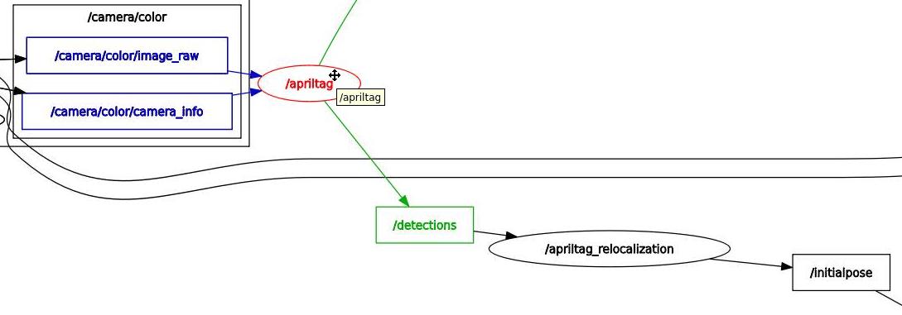
6.6 Схема взаимодействия узлов
Запустите во время работы навигации с повторной локализацией:
ros2 run rqt_graph rqt_graph
Узел apriltag подписывается на топик камеры для обнаружения меток и публикует топик /detections. Узел повторной локализации apriltag_relocation подписывается на /detections. Когда метка обнаружена, он вычисляет положение base_link робота в системе координат карты на основе записанных координат якоря метки на карте и публикует результат в /initialpose, запуская функцию локализации узла slam_toolbox для вычисления точных координат робота на карте на основе графа ограничений по положению.